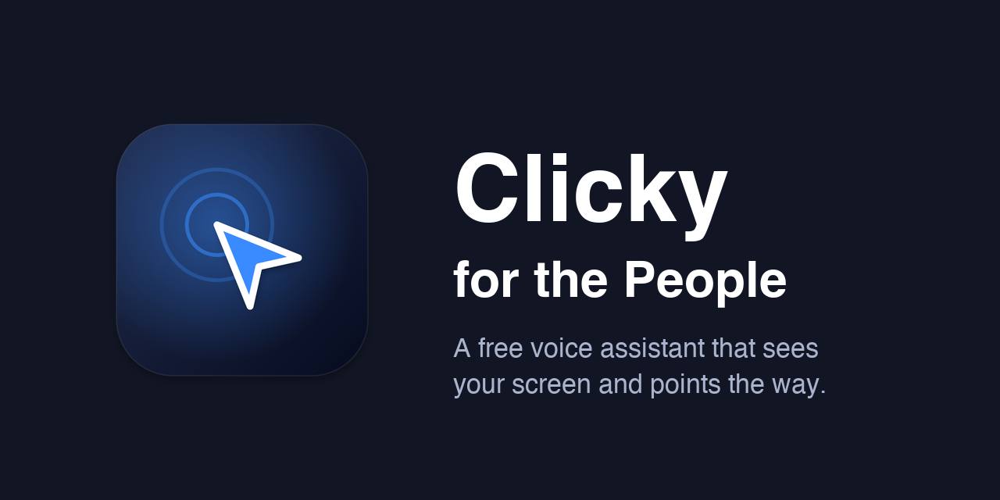

Clicky for the People
A free voice assistant that sees your screen. Hold a key, ask out loud, let go: Clicky answers, points at what you mean, clicks for you and reads pages aloud. It runs on the Claude or ChatGPT subscription you already have. English, Hebrew and French.
Clicky לכולם
עוזר קולי חינמי שרואה את המסך. מחזיקים מקש, שואלים בקול, עוזבים: Clicky עונה, מצביע על מה שהתכוונתם, לוחץ בשבילכם ומקריא עמודים. עובד על מנוי Claude או ChatGPT שכבר יש לכם.